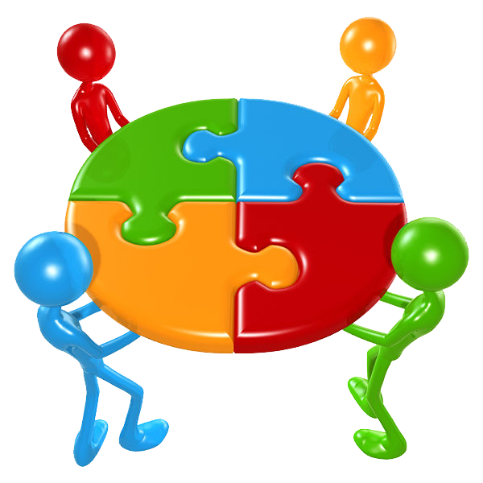

Github
This week I learned about Github, and how SourceTree plays a big part in Github. First you will create a Github account. you then create a new repository, named it the title of the project I am currently working on and then cloned the url on SourceTree. Before you actually started working on it you have to create a branch so all the work and progress I achieve on my project will be saved on that branch but that's after you commit which is like saving. Right after you commit you had to push the new information to the master. The master branch is also known as your storage branch, all your progress will be moved to the master branch. Right after you push you will go to your Github account and you will merge pull request. it will check if there are any conflicts, you then confirm and delete the branch from your github account because you that information has been moved to the master branch so you do not need an extra branch witht he information. That is a way to confuse yourself and miss track your branches and where you are working on. Note that the branch is deleted from you Github account but not SourceTree. You then go to your Git, you then will fetch. Fetching refers to getting the latest changes from an online repository without merging them in. Once these changes are fetched you can compare them to your local branches. Right after you you fetch you'll want to pull in those changes to your local copy so that it's up to date. Then you will delete your local branch from your Git.

Team-work
This week we created our groups. My group members are Edgar, Caleb, Zach, and I. We made a website that contained a resume. The website had a few requirements that could be easily met. While working on the project I learned new project manegment skills. We used Github for others in your group to peer review your code. We also wrote down what we learned in a word doc and our peer reviews as well. We also started to learn how to make websites resonsive. At first I had a little trouble with making a website responsive. But I quickly got a hand of it because I went on code academy and started studying it more. Before we split our group of 4 into two person groups and decided to learn more about Githb and the process it takes to do it correctly. Towards the end of the week we started learning about responsive development. Everything new involving techonology will always start out really hard it all depending on the amount of effort you put in to learn will determine how fast you pick it up. 